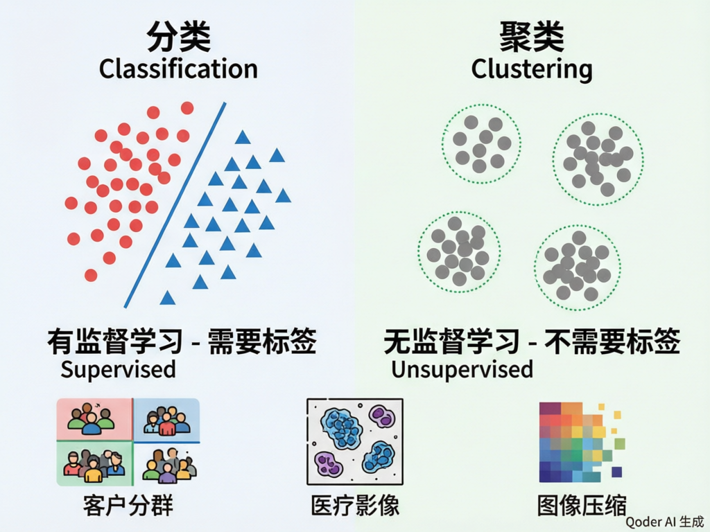
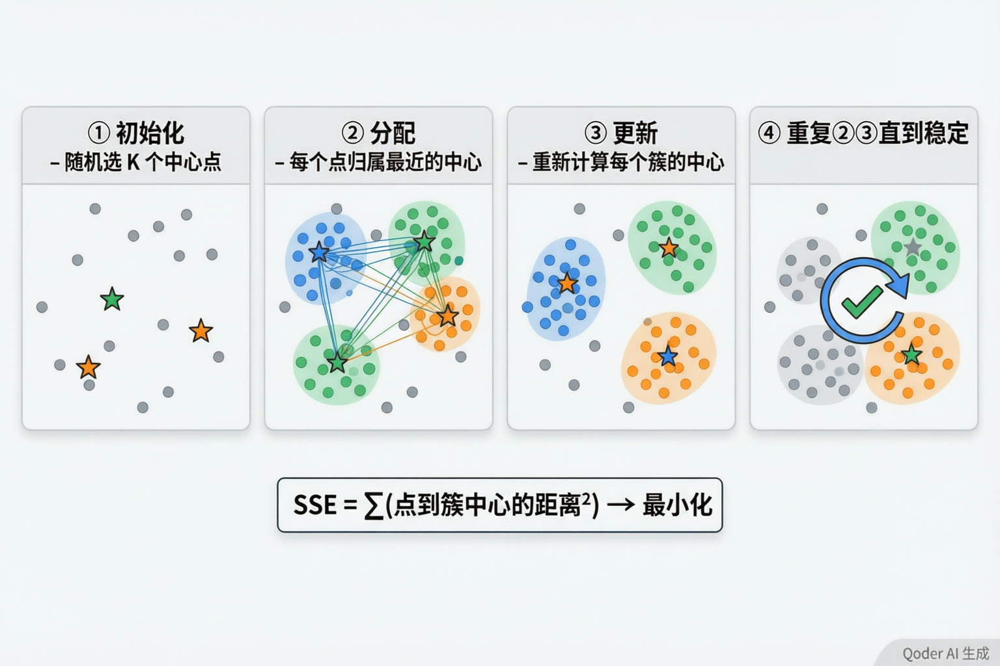
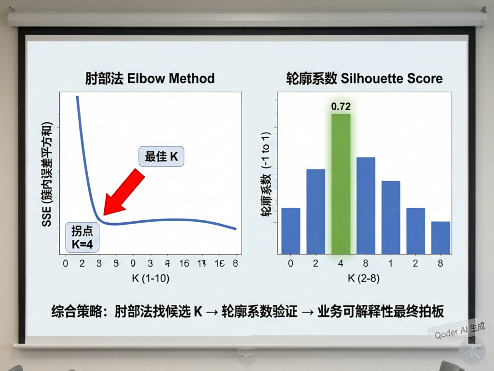
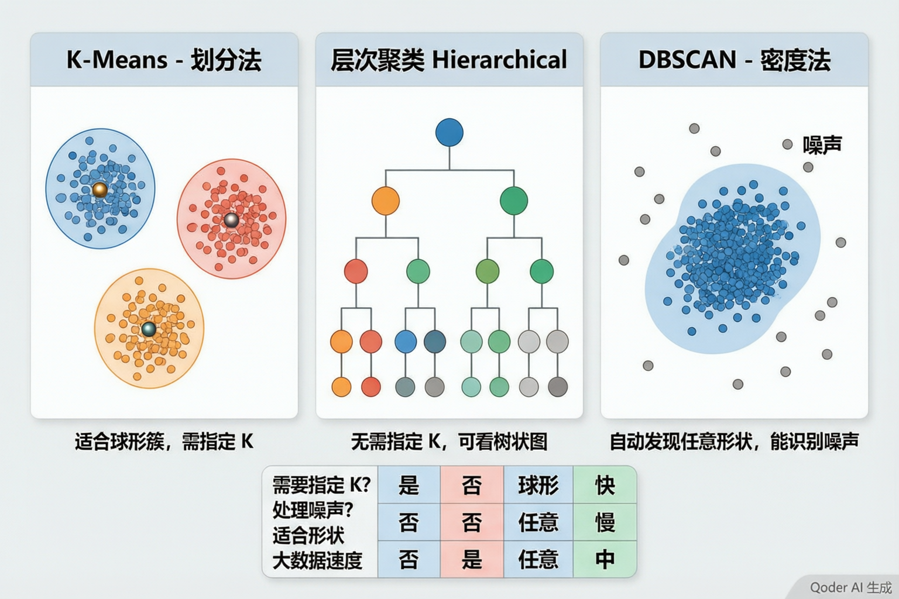

聚类分析
没有标签怎么办？让数据自己"说话"——理解无监督学习的核心思想

分类 Classification
• 有监督学习——需要标注好的标签
• 训练数据：(特征, 标签) 成对出现
• 目标：学会从特征到标签的映射
• 类比：老师给了一批标好答案的题，学生学会解题方法
• 类别是事先定义好的
聚类 Clustering
• 无监督学习——不需要任何标签
• 训练数据：只有特征，没有标签
• 目标：发现数据中"自然形成"的分组
• 类比：一堆没有分类标签的书，按内容相似度自动整理成几堆
• 类别是算法自己"发现"的
客户分群
电商平台根据消费金额、购买频率、品类偏好，将客户自动分成"高价值""潜力股""沉睡用户"等群体，精准制定差异化营销策略。
最经典应用
医疗分析
根据患者的各项体检指标，自动发现具有相似症状模式的病人群体，辅助医生判断疾病亚型或制定个性化治疗方案。
图像分割与压缩
将图像中的像素按颜色聚类，把成千上万种颜色压缩成几十种代表性颜色，或把图像分割成前景/背景等不同区域。
异常检测
正常数据形成密集的簇，异常点则远离所有簇。信用卡欺诈、网络入侵检测中，聚类常被用作第一道筛选。
四大聚类算法家族
① 划分法 Partitioning
将数据划分为 K 个互不重叠的簇。代表：K-Means。最常用、最快速，但需事先指定 K 值。
② 层次法 Hierarchical
自底向上或自顶向下构建簇的层级树。不需要指定 K，产生树状图（Dendrogram），可视化效果好但计算量大。
③ 密度法 Density-based
把数据密集的区域定义为簇。代表：DBSCAN。能发现任意形状的簇，还能自动识别噪声点。
④ 模型法 Model-based
假设数据由若干概率分布混合生成。代表：高斯混合模型（GMM）。给出每个样本属于各簇的概率而非硬分配。
SSE：簇内误差平方和
K-Means 的目标非常直觉：同一个簇内的点离得越近越好，不同簇离得越远越好。数学上，它最小化 SSE（Sum of Squared Errors，误差平方和）——每个点到它所属簇中心的距离的平方，全部加起来。SSE 越小，簇内越紧凑。
其中 μᵢ 是第 i 个簇的中心，Cᵢ 是第 i 个簇的所有点
🧠 课堂小测

随机选K个点
作为初始中心
每个点归属
最近的中心
重新计算
每个簇的中心
直到中心不再
变化（收敛）
第①步：初始化
从数据中随机选择 K 个点作为初始簇中心。这步非常关键——不同的初始值可能导致完全不同的聚类结果。常用的改进方法是 K-Means++，它让初始中心尽量彼此远离。
第②步：分配（Assignment）
遍历每一个数据点，计算它到 K 个中心的距离，把它分配给距离最近的那个簇。距离通常用欧氏距离（"直线距离"）。
第③步：更新（Update）
每个簇重新计算自己的"中心"——取簇内所有点的平均值作为新中心。这就是 "K-Means" 中 "Means"（均值）的由来。
第④步：收敛
重复②③，直到所有簇中心的变化小于某个阈值（比如移动不到 0.001）。算法保证 SSE 单调递减，最终收敛到局部最优——但不一定是全局最优。
① 必须先标准化！
K-Means 依赖距离计算。如果特征量纲不同（年龄 0-100，收入 0-100000），收入会完全统治距离计算，年龄几乎不起作用。这与神经网络的情况完全相同。
💡 永远在聚类前做 Z-score 标准化：x' = (x − μ) / σ
② 初始值敏感
不同的随机初始中心可能导致完全不同的聚类结果。K-Means 只能保证局部最优（离初始值最近的"山谷"），不能保证全局最优（整个地图的最低点）。
💡 实践中多跑几次取最佳 SSE，或使用 K-Means++ 初始化。
③ 球形假设
K-Means 默认簇是球形的、大小相近的。因为它是基于"到中心距离"来分组的——如果数据是拉长的月牙形或不规则形状，K-Means 可能会给出反直觉的结果。
💡 遇到非球形数据，考虑 DBSCAN 或谱聚类。

为什么"一直增加 K"不行？
如果你把 K 设成样本总数（每个点自成一组），SSE 会变成 0——但这毫无意义，等于没有聚类。肘部法的逻辑是：找到那个"再增加 K 收益也不大"的转折点。就像人弯曲手臂时，肘关节就是那个"弯得最厉害"的位置。
K=1,2,3,…,10
对应的 SSE
找"肘点"
推荐 K 值
轮廓系数（Silhouette Score）
轮廓系数衡量每个样本"和自己簇的成员有多近"（紧凑度 a）以及"和最近的其他簇有多远"（分离度 b）。取值范围 [-1, 1]，越接近 1 越好。
a = 样本与同簇其他点的平均距离（越小越好）
b = 样本与最近邻簇所有点的平均距离（越大越好）
s ≈ 1
样本在自己的簇里非常紧凑，且远离其他簇。完美的聚类。
s ≈ 0
样本在两个簇的边界上，分到哪边都差不多。模糊地带。
s ≈ -1
样本可能被分错了簇——它和其他簇的成员更近。需要警惕。
第二步（验证）：对每个候选 K 计算平均轮廓系数，选最高的。
第三步（业务）：最终由业务方确认——"分成 4 类在营销方案上是否可行？每个簇的业务含义是否清晰？"
缺一不可。
Z-score
肘部法+轮廓
K-Means K=4
PCA降维+雷达图
业务策略
数据集说明
模拟某电商平台 500 名客户，四个特征：月均消费金额、年购买次数、客单价、最近购买距今（天）。全部标准化后，肘部法和轮廓系数一致指向 K=4。
PCA 降维可视化
我们有 4 个特征，无法直接在纸上画出，因此使用 PCA（主成分分析）把 4 维压缩到 2 维，画在平面上。PCA 会保留数据中"最重要的差异方向"，让我们能直观看到 4 个簇的分隔情况。需要注意：降维后的距离不等于原始距离，仅供参考。
四类客户簇画像表
| 簇 | 月消费(元) | 年购买次数 | 客单价(元) | 最近购买(天) | 人数 | 命名 |
|---|---|---|---|---|---|---|
| 簇 0 | 2150 | 32 | 580 | 3 | 68 | 🌟 核心VIP |
| 簇 1 | 680 | 15 | 310 | 8 | 142 | 📈 活跃潜力股 |
| 簇 2 | 180 | 4 | 120 | 45 | 195 | 💤 沉睡大众 |
| 簇 3 | 890 | 8 | 620 | 28 | 95 | 🎯 高客单流失预警 |
🌟 核心VIP（68人）
月消费最高、购买最频繁、最近刚买过。贡献了约 40% 营收。策略：专属客服、新品优先体验、年度感恩礼。
📈 活跃潜力股（142人）
消费中等偏上、购买规律、客单价有提升空间。策略：满减券引导提高客单价、交叉销售推荐高利润商品。
💤 沉睡大众（195人）
消费低、买得少、已经 45 天没来了。策略：大额唤醒券、推送个性化推荐、短信/邮件召回。
🎯 高客单流失预警（95人）
买的东西贵但频率低、最近购买距今 28 天。策略：定向调查为什么不回购？升级售后服务、会员日专享。

层次聚类 Hierarchical
• 不需要预先指定 K 值
• 产生树状图（Dendrogram）
• 合并策略有 3 种 Linkage：
— Single：取最近点距离
— Complete：取最远点距离
— Ward：最小化合并后方差增量
• 计算复杂度 O(N² log N)，不适合超大样本
• 适合：需要可视化聚类层级结构的场景
DBSCAN 密度聚类
• 不需要指定 K 值，但需要指定 Eps（邻域半径）和 MinPts（最小点数）
• 核心概念：
— 核心点：邻域内 ≥ MinPts 个点
— 边界点：邻域内 < MinPts，但在某个核心点的邻域内
— 噪声点：既不是核心也不是边界
• 最大优势：能发现任意形状的簇 + 自动标记噪声
• 适合：地理空间数据、异常检测
三算法对比总表
| 特性 | K-Means | 层次聚类 | DBSCAN |
|---|---|---|---|
| 需指定K？ | ✅ 是 | ❌ 否（可后切） | ❌ 否（自动发现） |
| 簇形状 | 球形 | 任意（依赖Linkage） | 任意形状 |
| 噪声处理 | 强制分配所有点 | 强制分配所有点 | ✅ 标记为噪声 |
| 大数据速度 | ⭐⭐⭐⭐⭐ 快 | ⭐⭐ 慢 | ⭐⭐⭐⭐ 较快 |
| 可解释性 | ⭐⭐⭐⭐ | ⭐⭐⭐⭐⭐ 树状图 | ⭐⭐⭐ |
| 经典场景 | 客户分群 | 生物学分类 | 地理/异常检测 |
🔍 聚类基础 → 分类 vs 聚类（有监督 vs 无监督）→ 四大应用场景 → 四大算法家族
↳ 🎯 K-Means → SSE 目标函数 → 四步迭代（初始化→分配→更新→重复）→ 三大注意（标准化/初始值/球形假设）
↳ 📏 选 K 与评估 → 肘部法（SSE拐点）→ 轮廓系数（紧凑度 vs 分离度）→ 综合三步策略
↳ 🧪 客户分群实验 → 标准化 → K搜索 → 聚类 → PCA可视化 → 簇画像 → 业务策略
↳ 🌲 算法全景 → 层次聚类（树状图+Linkage）→ DBSCAN（密度+噪声）→ 三算法对比
1. 聚类是无监督学习——不需要标签，算法自己从数据中发现自然分组。分类需要有标签，聚类不需要。
2. K-Means 是聚类的主力算法。核心是"点到中心距离平方和最小化"，四步迭代直到收敛。但必须先标准化。
3. 选 K 是科学+艺术：肘部法找候选 → 轮廓系数做验证 → 业务可解释性最终拍板。技术指标再好，业务上讲不通也没用。
4. K-Means 不是唯一选择。层次聚类适合看层级关系，DBSCAN 适合任意形状的簇和含噪声的数据。不同数据形态需要不同的聚类工具。
🧠 终极挑战
你现在已经理解了聚类分析的核心思想：在没有标签的情况下，让数据自己"抱团"，然后人类给每个团一个有意义的名字。这是机器学习和数据挖掘中最强大的探索性工具之一。继续深入的话，可以探索高斯混合模型（GMM）、谱聚类（Spectral Clustering）、以及聚类在推荐系统中的应用。